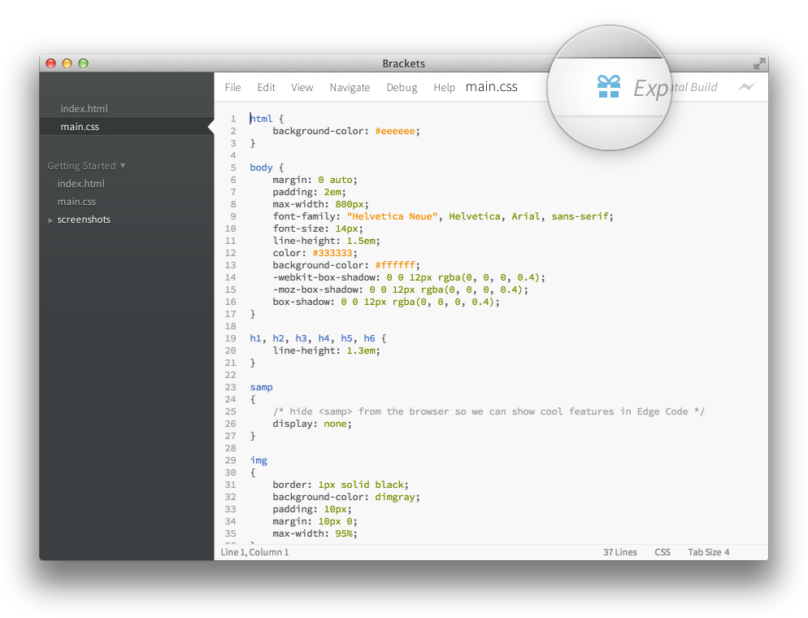
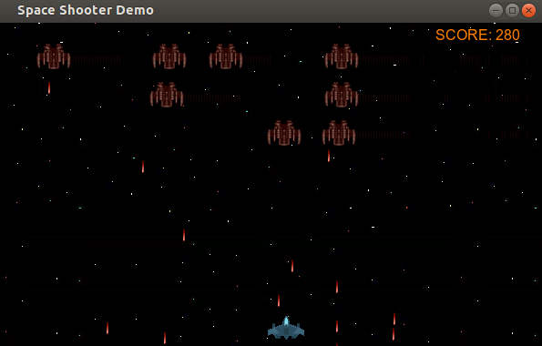

Node.JS Goodies
INTRODUCCIÓN a node.js
node.js
V8 JavaScript Engine
instalar Node.JS
wget http://nodejs.org/dist/v0.10.18/node-v0.10.18.tar.gz
tar xzvf node-latest.tar.gz && cd node-v*
./configure
make install
sudo add-apt-repository ppa:chris-lea/node.js
sudo apt-get update
sudo apt-get install nodejs
instalar Node.JS
brew install node
node.js
var http = require('http');
http.createServer(function (req, res) {
res.writeHead(200, {'Content-Type': 'text/plain'});
res.end('Hola Mundo\n');
}).listen(8080, '127.0.0.1');
console.log('Server running at http://127.0.0.1:8080/')
$ node holamundo.js
Server running at http://127.0.0.1:8080/
Node.js
var net = require('net');
var server = net.createServer(function (socket) {
socket.write('Echo server\r\n');
socket.pipe(socket);
});
server.listen(1337, '127.0.0.1');
$ nc localhost 1337
Echo server
ecoooo
ecoooo
NODE.JS
var net = require('net'), sockets = [];
var server = net.createServer(function (socket) {
sockets.push(socket);
socket.write('Bienvenido al Chat ;)\r\n');
socket.on("data", function(d){
sockets.forEach(function(v,i){
v.write(d);
});
});
socket.on("end", function(){
var index = sockets.indexof(socket);
delete sockets[index];
});
}); server.listen(1337, '127.0.0.1');
Node.JS CheatSHEETs
Node.JS TUTORIALES
node.js bibliografía
¿Qué apps se pueden hacer con Node.JS?

WebSites
Chat Rooms
Bitcoins Data
Real Time Games
Desktop Apps
Editor

HTML5 Desktop Game

$ cd front-end
$ ls
app/ Gruntfile.js
app.coffee handlebars/
app.min.js index.jade
bower.json mocha.opts
config.json node_modules/
docs/ package.json
estilos.less stylus/
estilos.min.css test/
express/
INTRODUCCIÓN a NPM
NPM
 NPM es el gestor de paquetes oficial de Node.JS. Fue creado por
Isaac Schlueter
y viene incluido junto con Node.JS desde la versión
0.6.3 liberada en el 2011
. Actualmente, Isaac continúa trabajando en Joyent y es el encargado de mantener el proyecto Node.JS.
NPM es el gestor de paquetes oficial de Node.JS. Fue creado por
Isaac Schlueter
y viene incluido junto con Node.JS desde la versión
0.6.3 liberada en el 2011
. Actualmente, Isaac continúa trabajando en Joyent y es el encargado de mantener el proyecto Node.JS.
NPM
$ npm --version
1.1.69
$ npm install colors
npm http GET https://registry.npmjs.org/colors
npm http 200 https://registry.npmjs.org/colors
npm http GET https://registry.npmjs.org/colors/-/colors-0.6.2.tgz
npm http 200 https://registry.npmjs.org/colors/-/colors-0.6.2.tgz
colors@0.6.2 node_modules/colors
NPM
$ tree
.
├── colores.js
└── node_modules
└── colors
├── colors.js
├── example.html
├── example.js
├── MIT-LICENSE.txt
├── package.json
├── ReadMe.md
├── test.js
└── themes
├── winston-dark.js
└── winston-light.js
3 directories, 10 files
NPM
$ cat colores.js
require('colors');
console.log('Hola Mundo'.rainbow);
NPM
$ cat package.json
{
"name": "colores",
"version": "0.0.1",
"dependencies" : {
"colors" : "*"
}
}
$ npm install
#instala automáticamente las dependencias listadas en package.json
NPM
$ npm help json
NPM
$ npm install -g express
$ npm search colors
$ npm view colors
NPM
$ npm publish
NPM Cheat sheets
Bower
Bower
$ npm install -g bower
$ bower install jquery#1.9.1
Node.JS Goodies
- Grunt / Gulp
- Express
- Mocha
- Zombie.js / Phantom.js / Selenium
- Yeoman
- Docco
Grunt
Grunt
$ npm install -g grunt-cli
$ grunt --version
grunt-cli v0.1.13
Grunt
.
├── Gruntfile.js - definicion de tareas
└── package.json - dependencias node
$ grunt <task-name>
Automatizando con Grunt
$ lessc -x estilos.less estilos.css # comando manual
$ cat package.json
{
"name": "pre-procesar-less",
"version": "0.0.1",
"devDependencies": {
"grunt": "~0.4.2",
"grunt-contrib-less": "*"
}
}
Automatizando con Grunt
$ cat Gruntfile.js
module.exports = function(grunt) {
grunt.initConfig({
pkg: grunt.file.readJSON('package.json'),
less: {
process: {
options: {compress:true},
files: {
'estilos.css': 'estilos.less',
}
}
}
}); // end grunt.initConfig
grunt.loadNpmTasks('grunt-contrib-less'); // Grunt Package
};
Automatizando con Grunt
$ npm install # primero instalar las dependencias
$ grunt less:process
Running "less:process" (less) task
File estilos.css created: 40 B → 29 B
Done, without errors.
Automatizando con Grunt
$ lessc -x estilos.less estilos.css # comando manual
$ grunt less:process # grunt task
Automatizando con Grunt
$ cat package.json
{
"name": "pre-procesar-less",
"version": "0.0.1",
"devDependencies": {
"grunt": "~0.4.2",
"grunt-contrib-less": "*",
"grunt-contrib-watch": "*"
}
}
Automatizando con Grunt
$ cat Gruntfile.js
module.exports = function(grunt) {
grunt.initConfig({
pkg: grunt.file.readJSON('package.json'),
less: {
/* [ ... ] idem ejemplo aterior */
},
watch: {
lessfiles: {
files: '*.less',
tasks: ['less:process']
}
}
}); // end grunt.initConfig
grunt.loadNpmTasks('grunt-contrib-less');
grunt.loadNpmTasks('grunt-contrib-watch'); // <- nueva dependencia
};
Automatizando con Grunt
$ npm install # primero instalar las nuevas dependencias
$ grunt watch:lessfiles
Running "watch:lessfiles" (watch) task
Waiting...
>> File "estilos.less" changed.
Running "less:process" (less) task
File estilos.css created: 81 B → 59 B
Done, without errors.
Completed in 0.505s
at Sun May 11 2014 22:54:10 GMT-0300 (ART) - Waiting...
EXPRESS
Express
$ express --sessions --css stylus sitioweb
$ cd sitioweb && npm install
$ node app
En este caso elegimos Stylus como pre-procesador de css y Jade como motor de templating, para ver mas opciones:
$ express -h
Express
app.get('/', function(req, res){
res.render('index', { title: 'Express'});
// Llama a la vista views/index.jade
// Le pasa un objeto a la vista
});
extends layout
block content
h1= title
p Welcome to #{title}
Express
Se pueden encadenar conjuntos de operaciones:
app.get('/', operacion1, operacion2, operacion3, function(req, res){
/**
* En este caso se ejecutaron 3 operaciones
* antes de mostrar la vista
*/
res.render('index', { title: 'Express'});
});
Express
Supongamos que es necesario tener una cookie activa para poder acceder al sitio:
var cookieAuthorizer = function(req, res, next) {
if(typeof req.cookies.authorizeme == "undefined"){
res.redirect('/site-not-available');
} else {
next();
}
}
app.get('/', cookieAuthorizer, function(req, res){
/**
* Esta vista solo se muestra si el usuario tiene la cookie
*/
res.render('index', { title: 'Express'});
});
Express
Podemos tener differentes métodos para las mismas URLs:
app.get('/pedidos/:id', middleware, function(){
// ... Leer registro
});
app.post('/pedidos/:id', middleware, function(){
// ... Modificar registro
});
app.put('/pedidos/:id', middleware, function(){
// ... Insertar registro
});
app.delete('/pedidos/:id', middleware, function(){
// ... Borrar registro
});
Mocha
Mocha
$ npm install -g mocha
$ $EDITOR test/test.js
var assert = require("assert");
describe('Array', function(){
describe('#indexOf()', function(){
it('should return -1 when the value is not present', function(){
assert.equal(-1, [1,2,3].indexOf(5));
assert.equal(-1, [1,2,3].indexOf(0));
})
})
})
$ mocha --reporter spec
Array
#indexOf()
✓ should return -1 when the value is not present
1 passing (6ms)
Mocha
Ejecutamos nuestra suite de testing
Zombie.JS
Headless Test
var Browser = require("zombie"), assert = require("assert");
browser = new Browser();
browser.visit("http://localhost:3000/", function () {
// Fill email, password and submit form
browser.
fill("email", "zombie@underworld.dead").
fill("password", "eat-the-living").
pressButton("Sign Me Up!", function() {
// Form submitted, new page loaded.
assert.ok(browser.success);
assert.equal(browser.text("title"),"Welcome To Brains Depot");
})
});
Testing Plan
Elaboramos un plan que incluya DB Unit Tests, Headless Testing y Fixtures
Testing Plan
$ npm install --save-dev
"devDependencies": {
"mocha": "~1.13.0",
"zombie": "~2.0.0-alpha24",
"mongoose-fixtures": "0.0.1"
}
Testeando el Modelo
describe('Model Test Personas', function(){
before(function(){
//Before all tests
Personas = require("../../../models/personas.js");
});
describe('Operaciones con Alumnos', function(){
it('Crear un nuevo alumno ', function(done){
var p = new Personas({nombre: "Jorge", cargo: "Alumno"});
p.save(done);
});
});
});
Testeando el Modelo
module.exports.Personas = [{
nombre : "Jose",
cargo : "Alumno"
},{
nombre : "Jorge",
cargo : "Alumno"
},{
nombre : "Juan Pablo",
cargo : "Alumno"
}];
//Contenido de test/fixtures/alumnos.js
Testeando el Modelo
describe('Model Test Personas', function(){
// ...
describe('Operaciones con Alumnos', function(){
it('Buscar Alumno por Nombre', function(done){
fixtures.load('../../fixtures/alumnos.js',function(err){
Personas.buscarPorNombre("Juan Pablo", function(pers){
if(pers[0].nombre == "Juan Pablo"){
done()
}else{
done((new Error('El alumno no fue encontrado')));
}
});
});
});
});
});
Testeando el Modelo
$ mocha ./test/unit/db/* --reporter spec
Model Test Personas
Operaciones con Alumnos
✓ Crear un nuevo alumno
✓ Obtener Datos de Alumno
✓ Editar Datos de Alumno
✓ Borrar Alumno
✓ Buscar Alumno por Nombre
5 tests complete (26 ms)
Testeando la Aplicación
Testeando la Aplicación
describe('Headless Testing', function(){
describe('ABM de Alumnos', function(){
it('Crear un nuevo alumno', function(done){
browser.visit(domain+"/new", function () {
browser.
fill("nombre", "Ariel").
pressButton("Guardar", function() {
if(browser.location.pathname == "/"){
done()
}else{
throw new Error('Fallo el alta de alumno');
}
});
});
});
});
});
Testeando la Aplicación
$ mocha ./test/functional/headless/* --reporter spec
Headless Testing
ABM de Alumnos
✓ Crear un nuevo alumno (155ms)
✓ Listar Alumnos (65ms)
✓ Editar Datos de Alumno (198ms)
✓ Borrar Alumno (63ms)
4 tests complete (485 ms)
Phantom.js

Phantom.js
$ cat capture.js
var page = require('webpage').create();
page.open('http://github.com/', function() {
page.render('github.png');
phantom.exit();
});
$ phantomjs capture.js
Yeoman
Yeoman
$ npm install -g yo
$ yo backbone my-new-app-name-here
$ yo backbone:model blog
$ yo backbone:collection blog
$ yo backbone:router blog
$ yo backbone:view blog
$ grunt serve
Yeoman TUTORIALES

Docco
Docco
$ npm install -g docco
$ docco ./models/*.js -o docs/